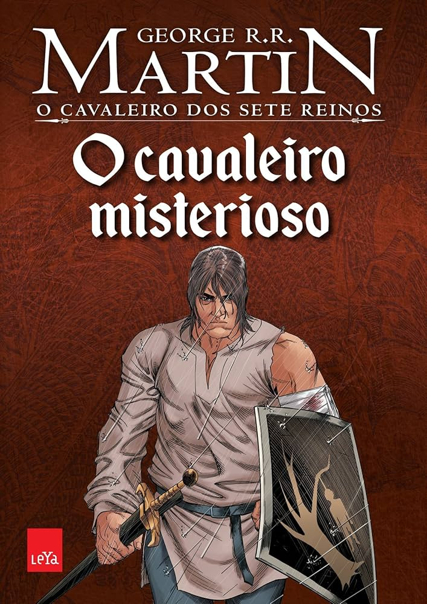

O Cavaleiro Misterioso

Sinopse:
"O Cavaleiro Misterioso" (The Mystery Knight) é o terceiro conto da série "Dunk & Egg", escrita por George R.R. Martin. A trama segue Sor Duncan, o Alto, e seu escudeiro Egg, que param em um banquete de casamento e torneio, onde se envolvem em uma conspiração de traidores e em uma disputa por um ovo de dragão, enquanto enfrentam a política dos Blackfyre.
Comprar o livro